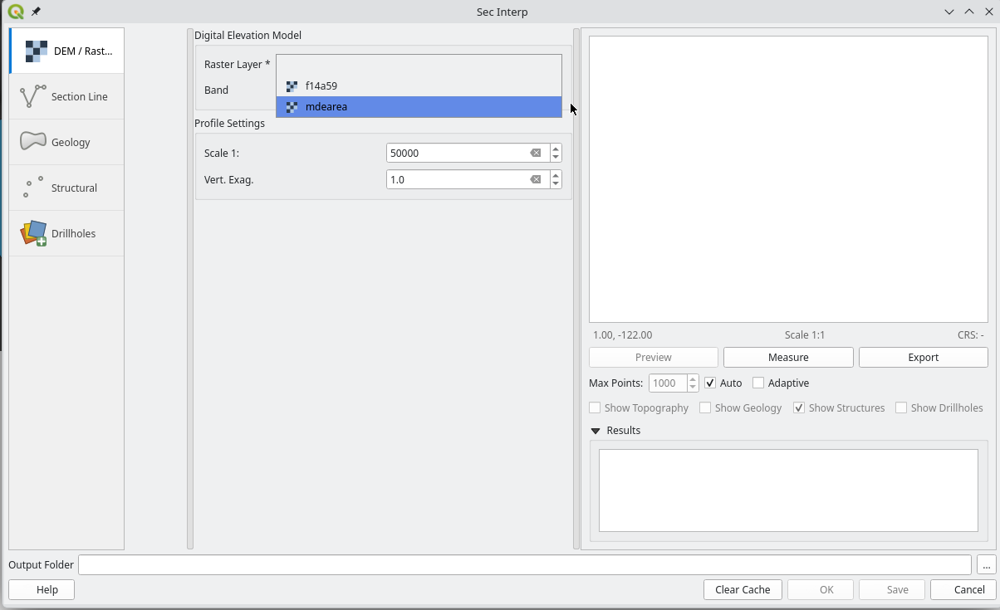
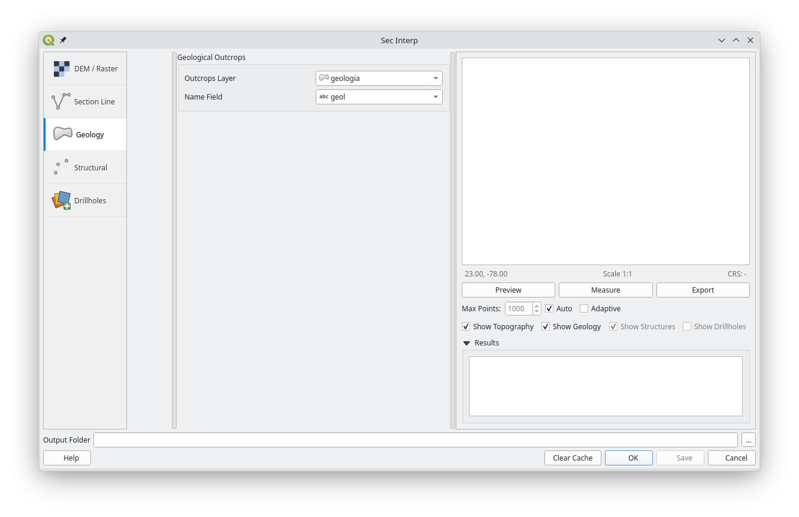

SecInterp v2.1
Section Interpreter for Geoscience in QGIS
SecInterp is a powerful QGIS plugin designed to streamline the extraction and visualization of geological data for cross-section interpretation. It allows geologists to quickly generate topographic profiles, project geological outcrops, and analyze structural data in a unified 2D view.
Key Features
Interactive Preview System
- Real-time Visualization: Instantly view topography, geology, and structures.
- Performance: Uses Parallel Processing to handle complex intersections without freezing QGIS.
- Adaptive LOD: Automatically adjusts data density based on zoom level.
Advanced Tools
- Measurement Tools: Calculate distances and slopes directly on the profile with Snapping.
- Drillhole Support: Project 3D drillhole traces and geological intervals onto the 2D plane.

Layer Data Requirements
Raster Layer (DEM)
- Data Type: Single-band or multi-band raster.
- Format: Any GDAL-supported format (GeoTIFF, IMG, ASCII Grid, etc.).
- Coordinate System: Must use a projected CRS (not geographic).
- NoData: Should be properly defined in the raster metadata.
Crossline Layer
- Geometry: LineString or MultiLineString.
- Features: Typically contains a single line feature defining the section location.
- Orientation: The line direction determines the profile orientation (start to end point).
Outcrop Layer (Geology)
- Geometry: Polygon or MultiPolygon.
- Fields: Requires at least one field containing the geological unit identifier.
- Quality: Polygons should be topologically correct (no gaps or overlaps).
Structural Layer
- Geometry: Point.
- Fields: Requires Strike (0-360°) and Dip (0-90°) numeric fields.
- Buffering: Points within the configured buffer distance of the crossline will be projected.
Quick Start Guide
1. Prepare and Configure DEM
Select your elevation raster and the appropriate band from the DEM tab. The plugin automatically calculates a suggested scale based on resolution.
2. Set Section Line
Choose the line layer that defines the location and orientation of your cross-section. Ensure it uses the same projected CRS as your DEM.

3. Geology & Structures
Configure geological outcrops and structural measurements to project them onto the section. Select the lithology attribute and the dip/strike fields.

4. Drillholes (Optional)
Configure Collar, Survey, and Interval layers to project drillhole data. Supports geometry-based locations or manual coordinates.


5. Preview and Analyze
Click Preview Profile. Use the measurement tools to calculate slopes and distances directly on the view with snapping support.

Outputs
The plugin generates standard output files in your selected output folder:
- topo_profile.csv: Distance and elevation points along the section.
- geol_profile.csv / .shp: Geological units draped over the topography.
- structural_profile.csv / .shp: Projected apparent dip lines.
- drillhole_traces.shp: 3D projection of drillhole traces onto the 2D profile section.
- drillhole_intervals.shp: Visualization of geological intervals along drillhole traces with attributes.
- Image Exports: PNG, SVG, PDF formats available directly from the Export tab.